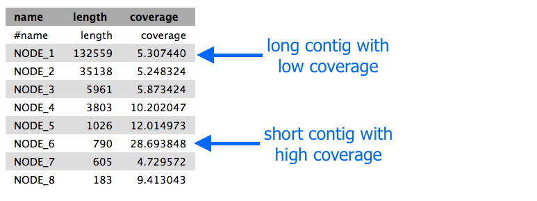

Assembly using Spades
Spades is one of a number of de novo assemblers that use short read sets as input (e.g. Illumina Reads), and the assembly method is based on de Bruijn graphs.
- For information about Spades see this link.
The data
The read set for today is from an imaginary Staphylococcus aureus bacterium with a miniature genome.
- The whole genome shotgun method used to sequence our mutant strain read set was produced on an Illumina DNA sequencing instrument.
- The files we need for assembly are the
mutant_R1.fastq andmutant_R2.fastq . - The reads are paired-end.
- Each read is 150 bases long.
- The number of bases sequenced is equivalent to 19x the genome sequence of the wildtype strain. (Read coverage 19x - rather low!).
Import the data
- Log in to your Galaxy instance (for example, Galaxy Australia, usegalaxy.org.au).
Use shared data
If you are using Galaxy Australia, you can import the data from a shared data library.
In the top menu bar, go to
- Click on
Data Libraries . - Click on
Galaxy Australia Training Material: Assembly: Microbial Asssembly . - Tick the boxes next to the two files.
- Click the
To History button, select As Datasets. - Name a new history and click
Import . - In the top menu bar, click
Analyze Data . - You should now have two files in your current history.
Or, import from the web
Only follow this step if unable to load the data files from shared data, as described above.
- In a new browser tab, go to this webpage:

- Find the file called
mutant_R1.fastq - Right click on file name: select “copy link address”
- In Galaxy, go to
Get Data and then Upload File - Click
Paste/Fetch data - A box will appear: paste in link address
- Click
Start - Click
Close - The file will now appear in the top of your history panel.
- Repeat for
mutant_R2.fastq .
Shorten file names
- Click on the pencil icon next to the file name.
- In the centre Galaxy panel, click in the box under
Name - Shorten the file name to
mutant_R1.fastq - Then click
Save
We now have two FASTQ read files in our history.
- Click on the eye icon next to one of the FASTQ sequence files.
- View the file in the centre Galaxy panel.
Quality Control
If you want to check the quality of your reads, see the Quality Control tutorial.
- Note: Skip over the “Import Data” section and instead use the file called
mutant_R1.fastq that is already in your current history.
Assemble the reads
We will perform a de novo assembly of the mutant FASTQ reads into long contiguous sequences (in FASTA format.)
- Go to the Tool panel and search for “spades” in the search box.
-
Click on
SPAdes -
Set the following parameters (leave other settings as they are):
Run only Assembly : Yes [the Yes button should be darker grey]Kmers to use separated by commas: 33,55,91 [note: no spaces]Coverage cutoff: autoFiles → Forward reads: mutant_R1.fastq Files → Reverse reads: mutant_R2.fastq
-
Your tool interface should look like this:

- Click
Execute
How do I choose settings when running a tool?
- In this case, most of the default settings are appropriate for our data set and analysis.
- Under the tool interface in Galaxy there will usually be a more detailed description of the tool options, and a link to the tool’s documentation.
- It is recommended that you read about the tool parameters in more detail in the documentation, and adjust to your data and analysis accordingly.
Examine the output
- Galaxy is now running Spades on the reads for you.
-
When it is finished, you will have five (or more) new files in your history, including:
- two FASTA files of the resulting contigs and scaffolds
- two files for statistics about these
- the Spades logfile

- To view the output, click on the eye icon next to each of the files.
- Note that the short reads have been assembled into much longer contigs.
- (However, in this case, the contigs have not been assembled into larger scaffolds.)
- The stats files will give you the length of each of the contigs, and the file should look something like this:

Extension exercise
- Look at the
contigs.stats file. - Find a contig that seems to have high coverage relative to the other contigs.
- Extract this sequence from the
contigs.fasta file. Select the sequence for the contig (called a Node) of interest, and copy. - Go to the NCBI page and BLAST this sequence to see what it matches.
- Try the “blastx” option, which will translate your nucleotide sequence into a protein sequence.
- For
Enter Query Sequence , paste your sequence into the box. - For
Genetic Code choose “Bacteria and Archaea”. - For
Database , try the “SwissProt” database. You can also re-try with other options to see how the database affects the results. - All other options can be left as default. Click
BLAST . - What does your sequence match?
- Does this suggest that the sequence is a repeat region in this bacterial genome?
- For a detailed description of the output, see the top right corner of the page and click “Blast report description”.
See this history in Galaxy
If you want to see this Galaxy history without performing the steps above:
- Log in to Galaxy Australia: https://usegalaxy.org.au/
- Go to
Shared Data - Click
Histories - Click
Completed-assembly-analysis - Click
Import (at the top right corner) - The analysis should now be showing as your current history.
More information
Here are some references covering more information about genome assembly.
More about de Bruijn graphs: Compeau PEC, Pevzner PA, Tesler G. How to apply de Bruijn graphs to genome assembly. Nat Biotechnol. 2011 Nov 8;29(11):987–91.
An assembler for long reads: Koren S, Walenz BP, Berlin K, Miller JR, Phillippy AM. Canu: scalable and accurate long-read assembly via adaptive k-mer weighting and repeat separation Genome Res. 2017 May;27(5):722-736.
An assembler for large genomes: Jackman SD, Vandervalk BP, Mohamadi H, Chu J, Yeo S, Hammond SA, Jahesh G, Khan H, Coombe L, Warren RL, Birol I. ABySS 2.0: resource-efficient assembly of large genomes using a Bloom filter. Genome Res. 2017 May;27(5):768–77.
Visualizing genome assemblies: Wick RR, Schultz MB, Zobel J, Holt KE. Bandage: interactive visualization of de novo genome assemblies. Bioinformatics. 2015 Oct 15;31(20):3350–2.
Yeast genome assembly: Goodwin S, Gurtowski J, Ethe-Sayers S, Deshpande P, Schatz MC, McCombie WR. Oxford Nanopore sequencing, hybrid error correction, and de novo assembly of a eukaryotic genome. Genome Res. 2015 Nov;25(11):1750–6.
Animal genome assembly: Austin CM, Tan MH, Harrisson KA, Lee YP, Croft LJ, Sunnucks P, Pavlova A, Gan HM. De novo genome assembly and annotation of Australia’s largest freshwater fish, the Murray cod (Maccullochella peelii), from Illumina and Nanopore sequencing read. Gigascience. 2017 Aug 1;6(8):1–6.
Human genome assembly: Chaisson MJP, Wilson RK, Eichler EE. Genetic variation and the de novo assembly of human genomes. Nat Rev Genet. 2015 Nov;16(11):627–40.
Plant genome assembly: Jiao W-B, Schneeberger K. The impact of third generation genomic technologies on plant genome assembly. Curr Opin Plant Biol. 2017 Apr;36:64–70.
What’s next?
To use the tutorials on this website:
- ← see the list in the left hand panel
- ↖ or, click the menu button (three horizontal bars) in the top left of the page
You can find more tutorials at the Galaxy Training Network: